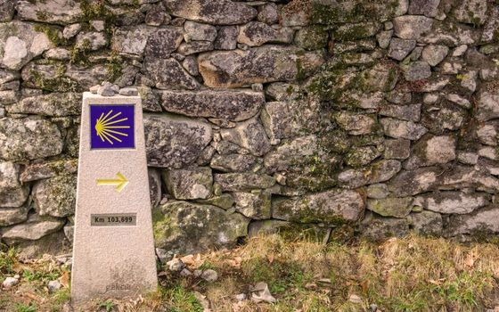

|
| | |
Xacobeo 2027
Un día cualquiera en el Camino
|
|
Hola [Nombre]: Son las ocho de la mañana en un pueblo gallego. Sales del hotel con el aire aún fresco y pasas junto a un hórreo, esos graneros de piedra sobre pilares que protegían el grano de la humedad y llevan siglos viendo pasar peregrinos. |
|
Este podría ser el principio de un día cualquiera en el Camino. |
Con Santiago Ways disfrutas de cada detalle sintiéndote con fuerzas tras haber descansado bien, porque no duermes en albergues compartidos. | Cada noche, un hotel con habitación privada. | | Tu maleta ya está allí cuando llegas. | | Teléfono de asistencia 24 horas por si surge cualquier cosa. |
Tú solo caminas. Lo único que te queda es elegir por dónde empezar. Para 2027, estas son dos de nuestras rutas favoritas: |
 | |
Desde Sarria
Los últimos 100 km, los que dan derecho a la Compostela. En Año Santo es donde más se siente el ambiente peregrino.
Ver ruta → |
| | |
Camino Portugués
El preferido de los peregrinos alemanes que viajan con nosotros. Más tranquilo, con tramos de costa y pueblos pequeños.
Ver ruta → |
|
|
| |
|
Precio garantizado
Si reservas ahora, te garantizamos el precio actual para 2027. Merece la pena: en Año Santo la demanda crece mucho y los hoteles del Camino se llenan antes de lo habitual. |
|
¿Te llamamos 10 minutos y lo vemos juntos? |
|
|